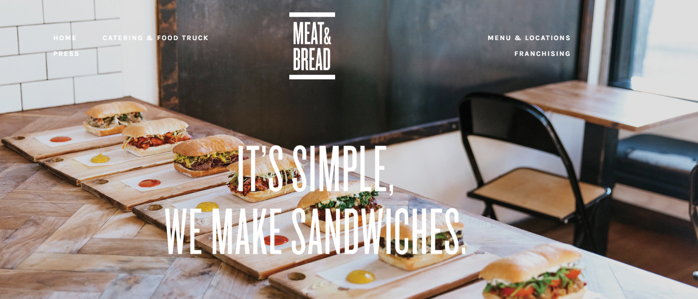
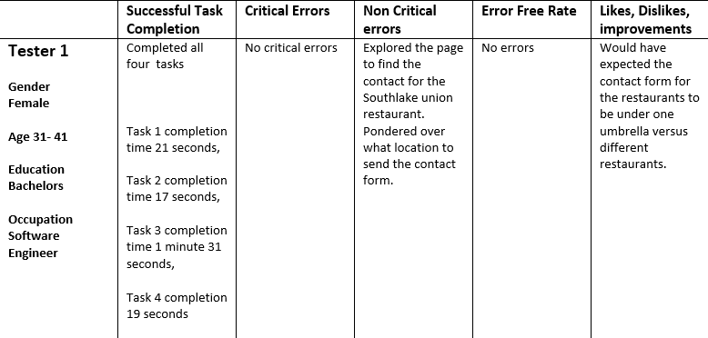
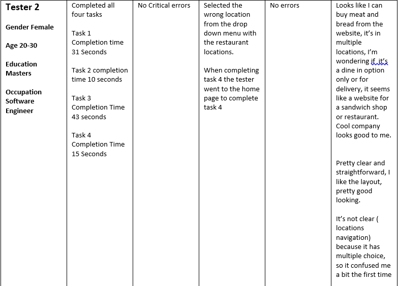
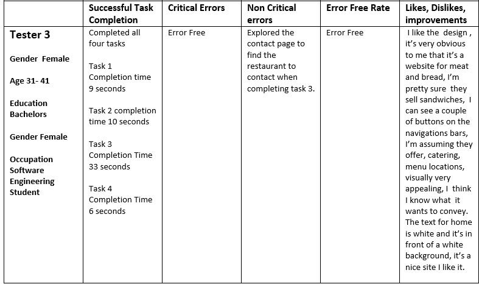
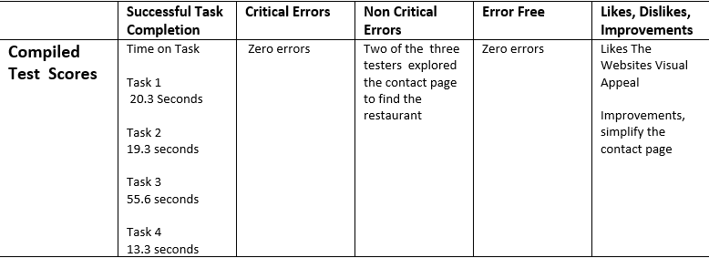

Meat and Bread Usability Test
Steve Krugs, Don't Make Me Think, makes the argument for Usability Testing. According to Krug, Usability Test puts an end to the debate over the myth of the average user by simply stating, "If you want a great site you've got to test it".The following data is a Usability test for MeatandBread.com an international restaurant with locations in the Canada and Seattle region.
The Meat and Bread usability test was conducted with usability tools from Usability.gov, scripts from Steve Krugs Rocket Surgery Made Easy, The Do it Yourself Guide to finding and fixing Usability Problems."
 Meat and Bread Home PageScope: This usability test is for the website Meat and Bread.com. The scope includes testing the website navigation, content and communication with website creators.
Purpose: Effective business websites allow users to easily purchase products, have shareable information about their product or service to attract new customers, and provide customers with an opportunity to discuss areas of concerns to increase customer satisfaction. As a result, the purpose of the usability test is to see if users can easily find a local restaurant, find the menu, the company Instagram page and complete a contact form.
Schedule & Location: The usability test schedule and location varied based on tester availability. The test will be located in a quiet location. The sessions are scheduled to take place in the evening hours.
Sessions: The sessions are scheduled for 30 min. The session includes an introduction to usability testing, distribution of release forms, distribution of written tasks, and wrap up.
Equipment: The equipment for the test includes a laptop, mobile smartphone to record the session and Movavi Screen Recorder, audio recorder.
Participants: The three participants for the Meat and Bread usability test were recruited by the moderator by face to face request.
Scenarios:
Indicate the number and types of tasks included in testing. The usability test includes four tasks.
- Find the South Lake Union restaurant address
- Pick a sandwich you would order.
- Fill out the contact form, but do not submit.
- Open the company Instagram page
Identifying Test Metrics
Identifying Test Metrics
There are several metrics that you may want to collect during the course of testing.
- Successful Task Completion: Each scenario requires the participant to obtain specific data that would be used in a typical task. The scenario is successfully completed when the participant indicates they have found the answer or completed the task goal. In some cases, you may want give participants multiple-choice questions. Remember to include the questions and answers in the test plan and provide them to note-takers and observers.
- Critical Errors: Critical errors are deviations at completion from the targets of the scenario. For example, reporting the wrong data value due to the participant’s workflow. Essentially the participant will not be able to finish the task. Participant may or may not be aware that the task goal is incorrect or incomplete.
- Non-Critical Errors: Non-critical errors are errors that are recovered by the participant and do not result in the participant’s ability to successfully complete the task. These errors result in the task being completed less efficiently. For example, exploratory behaviors such as opening the wrong navigation menu item or using a control incorrectly are non-critical errors.
- Error-Free Rate: Error-free rate is the percentage of test participants who complete the task without any errors (critical or non-critical errors).
- Time On Task How much time did each tester take to complete the assigned task.
- Likes, Dislikes and Recommendations: Participants were asked what they liked most about the site, what they liked least about the site, and recommendations for improving the site.
Test Results for Tester 1
 Usability Data for Tester 1Test Results for Tester2
 Usabilty Data for Tester 2Test Results for Tester 3
 Usability Data for Tester 3Test Results and Recommendations
 Compiled averages for all Usability TestsBased on the three usability test, the average score for task completion for task three took the greatest duration of time. Creating one singular option for the contact form, instead of having a form for each restaurant can increase the amount of time, likelihood and completion of communication between website user and the company is a recommended improvement.